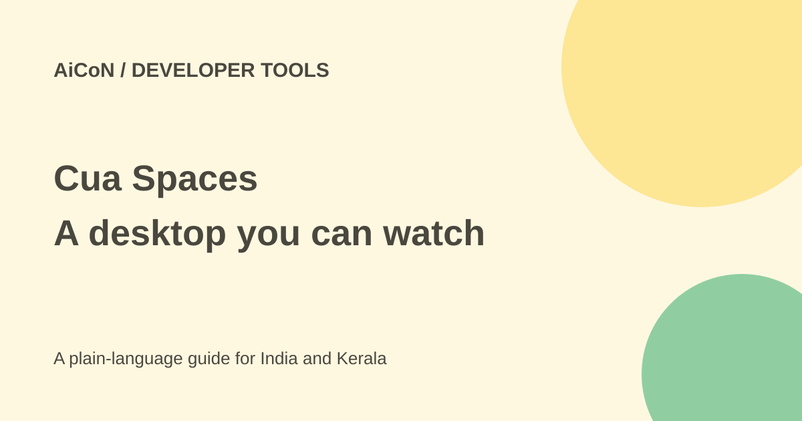

Cua Spaces: a separate desktop for AI agents
Cua Spaces gives AI agents a desktop you can watch. A Space can run locally, on another team machine or in your cloud. Separate desktops can limit exposure, but do not make every agent action safe.

What is a Space?
The documentation describes a container or virtual machine with a screen that streams to you and accepts input. You can register a machine, send files and move supported apps into a Space. The Mac app puts Spaces in the menu bar and notch.
The SDK is available for Python, TypeScript, Swift and Rust. It is developer-oriented, not a ready-to-use everyday assistant. Cloud machine setup and agent/model access are separate parts of the work.
Licence and costs
Cua Spaces is source-available under FSL-1.1-MIT. The official licence overview says use, modification and self-hosting are allowed except competing commercial products or services. Each release becomes available under MIT after two years. Other parts of the repository have different licences; do not call the entire Spaces product unrestricted MIT software.
The Spaces overview does not state a complete price. A local Space uses your computer's resources; cloud machines, models and other services may cost money. Team features are on a waitlist. Check current terms before offering a hosted service or promising free use to a client.
How to begin cautiously
- Read the Spaces overview and the official repository licence table.
- Choose a local test machine or a cloud account with a budget limit. Check current system requirements.
- Use the official create/add-Space guide for the chosen environment.
- Start with a test folder and an account that contains no private client data.
- Send only the files and app access the task needs. Treat signed-in apps as access to real accounts, not just a picture of the app.
- Watch a simple task on screen and check its result before giving it broader actions.
- Review Settings, General, Launch Cua Spaces at login. The docs say it is on after setup unless unticked.
- Remove test files and credentials, stop unused machines and check any cloud bill.
Why the boundary matters
A separate desktop can keep an agent away from the rest of your computer. But copied files and signed-in apps can still reveal information or permit real actions. An agent can make a wrong click inside a sandbox too. Keep backups and review deletes, messages and spending.
For an Indian developer, also consider where a cloud machine runs and whether work data may leave the organisation. No India-specific privacy or hosting claim was confirmed.
What changed since the original post?
The docs describe local, direct-machine and cloud spaces, not only a Mac container. We clarified the FSL restrictions and automatic-login startup. No Space was installed or app teleported for this guide.
Frequently asked questions
Is every component MIT licensed?
No. Spaces-specific components use FSL-1.1-MIT; the official licence table separates them from MIT parts.
Is a sandbox a guarantee?
No. Access inside it still needs careful limits and review.
Is there a confirmed free plan?
No complete current pricing verdict was established from the overview page.
Sources: Cua Spaces docs · Official licence overview · Actual Spaces component licence. Checked 7 October 2026.